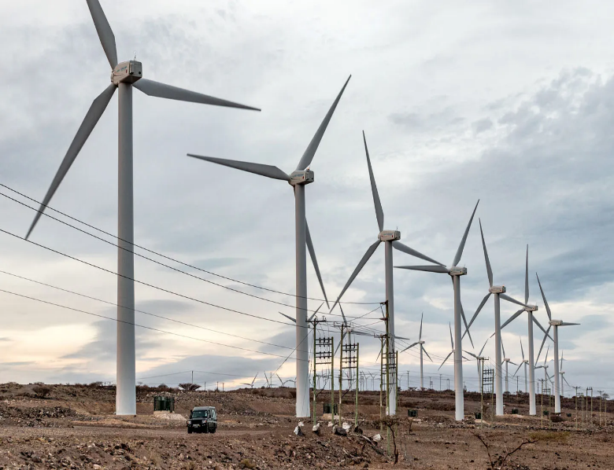
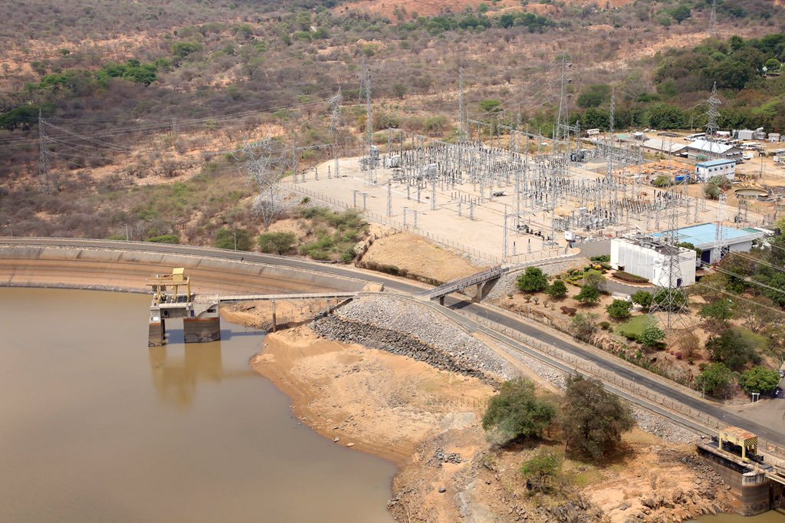

Annex – Detailed Partner Roles 21
In Kenya's far north, the Turkana corridor channels one of the world's most consistent wind resources — capable of supplying low-cost renewable power at national scale. Yet despite its exceptional resource potential, the project remained commercially unfinanceable for nearly a decade: the site lay 545 km from Nairobi, lacked transmission infrastructure and paved access, had no precedent for private investment at the required scale, and combined multiple delivery risks that no single actor could bear alone.[1]
|  |
In response, the Lake Turkana Wind Power consortium partnered with the Government of Kenya, Kenya Power (KPLC), KETRACO, and a consortium of development finance institutions to prepare and de-risk one of Africa's most ambitious renewable energy projects. This case illustrates the Project Preparation & Guarantee Platform model from the ‘Advancing Partnerships Between Private Sector and Development Actors in Africa’ Playbook, demonstrating how project preparation, stakeholder coordination, risk mitigation, and blended finance can transform a high-risk infrastructure opportunity into an investable project.
At financial close in 2014, LTWP represented the largest private investment in Kenya's history — €623 million for a 310 MW wind farm.[2]
THE OPPORTUNITY AT SCALE | 60%+ Average capacity factor | 310 MW Renewable electricity capacity | ≈17% Increase in Kenya's national power capacity |
THE CASE AT A GLANCE
Program | Lake Turkana Wind Power (LTWP) |
Playbook model | Model 2 — Integrated Project Preparation and Guarantee Platform |
Timeline | Concept 2005 · Wind farm complete 2017 · Full commercial operations 2019 |
Scale | 310 MW · 365 turbines · ≈17% increase in Kenya's national power capacity |
Financing | €623M — EIB €200M; EKF ≈€200M cover; EU-AITF €25M preferred equity |
Offtake terms | 20-year take-or-pay PPA with KPLC at ≈ US¢8.1–8.5/kWh |
Led by | LTWP consortium, Government of Kenya, KPLC, KETRACO and a consortium of DFIs and commercial lenders |
At the time the Turkana resource was first assessed, Kenya's power system remained heavily dependent on hydropower, which accounted for around 50% of electricity generation and left the country vulnerable to recurring droughts and costly diesel generation. Meanwhile, the Turkana jet — one of the world's strongest wind resources, with winds averaging around 11 m/s and expected capacity factors above 60% — offered exceptional renewable energy potential. Yet its remote location, on communally used pastoralist land far from roads and transmission infrastructure, placed the opportunity beyond the reach of conventional private investment.[3] |  Masinga Dam, the main reservoir in Kenya's hydropower system |
Kenya's power system before LTWP | ||||
≈50% dependence on hydropower | <1 in 3 Kenyans with electricity access[4] | Recurring droughts disrupted hydropower supply | 545 Km from Nairobi[5] | |
WHY THE STATUS QUO WAS UNSUSTAINABLE
The consequences extended well beyond the power sector. Hydro dependence created supply insecurity, fiscal stress, and a widening gap between energy ambition and delivery.
SUPPLY INSECURITY ● Droughts repeatedly collapsed hydro output ● Load-shedding and leased emergency diesel plants ● Demand growth outpacing the build-out pipeline | FINANCIAL BURDEN ● Thermal generation ≈7× the unit cost of hydro ● Foreign-exchange outflows for imported fuel ● Drought translated directly into higher tariffs | UNTAPPED OPPORTUNITY ● World-class wind resource identified from 2005 ● Could displace Kenya's costliest generation ● No structure existed to prepare or finance it |
By the early 2010s, the constraint was clear: the challenge was not the resource, demand, or capital, but the absence of a prepared, risk-allocated platform capable of attracting long-term private investment. — this is the status quo the partnership set out to change |
The Playbook approaches partnership design as a diagnostic exercise rather than a model selection exercise. It recognizes that many initiatives already demonstrate strong social impact, trusted delivery relationships, and clear development value, yet struggle to achieve scale, sustainability, or meaningful private-sector participation. The objective of the diagnostic is therefore to identify the structural conditions limiting deployment and understand why promising initiatives fail to become investable, scalable, and sustainable.
The diagnostic examines seven complementary analytical lenses:
1 | Demand and commercial pathways — Assesses whether strong social demand has been translated into credible commercial demand supported by sustainable payment and offtake mechanisms. |
2 | Project preparation and readiness — Evaluates whether projects have progressed beyond concept stage into technically, financially, legally, and institutionally prepared investment opportunities. |
3 | Financing logic — Examines whether an appropriate financing architecture exists to mobilize, deploy, and sustain capital over time. |
4 | Risk allocation — Assesses whether technical, financial, operational, and institutional risks are allocated to the actors best positioned to manage them. |
5 | Institutional coordination and role clarity — Evaluates whether responsibilities, leadership, and coordination mechanisms are sufficiently clear to support implementation at scale. |
6 | Legitimacy and community integration — Examines whether legitimacy, stakeholder ownership, and community engagement support long-term adoption and implementation. |
7 | Operational sustainability and scalability — Assesses whether the operational, institutional, and market conditions required for long-term scaling are already in place. |
The resulting diagnostic provides the analytical foundation for identifying the binding constraints that limit deployment and inform subsequent partnership model choice.
Applying the Playbook framework revealed five interrelated structural constraints that prevented the transition from moving beyond a recognized opportunity to large-scale implementation.
CONSTRAINT | WHAT EXISTED The strengths and assets in place | WHAT WAS MISSING The key gap blocking deployment |
1 Demand without Bankability | Demand of rare clarity: Kenya faced chronic electricity shortages, rapidly growing power demand, while the Turkana corridor offered one of the world's strongest wind resources capable of producing electricity at significantly lower cost than thermal generation. A single identifiable off-taker (KPLC), and a renewable energy policy further reinforced the commercial potential of the opportunity. | A commercially bankable revenue pathway Strong demand alone does not create an investable project. Mobilizing more than €600 million of long-term private capital required a revenue model capable of converting demand into predictable, financeable cash flows through a bankable PPA, payment security, clear allocation of take-or-pay obligations, and protection against transmission delays.. |
2 Capital without Structure | Capital in abundance : Development finance institutions, export credit agencies, commercial banks, blending facilities, and equity investors all had mandates aligned with frontier renewable infrastructure. Significant pools of long-term capital were available and actively seeking bankable investment opportunities across emerging markets. | A complete investment architecture Capital was available, but none of it could enter independently. Commercial debt required guarantees; lenders required a bankable PPA, government support, transmission certainty, and lender-compliant project preparation. Each financing instrument depended on the others reaching financial close simultaneously. |
3 Risk without Allocation | No unknown risks : The project's major risks were well understood—including political, transmission, payment, construction, development, and community land risks — and institutions existed with mandates to absorb many of them, including DFIs and export credit agencies. | A deliberate allocation of risk Identifying risks was not enough. Transmission delay risk had no owner; political risk exceeded commercial appetite; payment obligations remained contested; and community land risks were left unresolved. |
4 Institutions without Coordination | Every required institution : A supportive Government, a contracted off-taker (KPLC), a mandated transmission company (KETRACO), committed developers, DFIs, export credit agencies, commercial lenders, and experienced contractors—all with clearly defined roles and a shared interest in the project's success. | An integrated coordination architecture No single institution could deliver the project alone or coordinate the others. Financing, transmission, government support, and construction progressed through separate organizations with highly interdependent responsibilities. |
These constraints are deeply interconnected and reinforce one another — creating a deployability gap that prevented a strategically important opportunity from reaching large-scale implementation. |
The diagnostic showed that the primary barriers were not resource availability, demand, or capital. Rather, the project lacked the integrated preparation, financial structuring, risk allocation, and institutional coordination required to transform a technically viable opportunity into an investable infrastructure asset. These characteristics closely align with the purpose of the Integrated Project Preparation and Guarantee Platform model.
Project preparation establishes the technical, financial, legal, environmental, and contractual foundations required for investment. Rather than representing a separate constraint, it provides the structure through which bankable revenue arrangements, credible financing, and coordinated implementation can emerge — directly addressing the absence of an integrated investment architecture.
Risk mitigation reduces the uncertainty that prevents private capital from participating in large-scale infrastructure. By allocating political, commercial, technical, and operational risks to the actors best positioned to manage them, the platform creates a risk profile compatible with long-term private investment — addressing the challenge of unallocated implementation risk.
Coordination becomes essential when implementation depends on multiple public and private institutions with interdependent responsibilities. The platform aligns decision-making, sequences preparation, financing, and construction, and provides the governance needed to transform fragmented institutions into a single delivery mechanism — addressing the coordination failures identified in the diagnostic.
Capital mobilization is the outcome rather than the starting point. Once commercial pathways are established, investment structures are prepared, risks are allocated, and institutions are aligned, the platform creates the conditions under which development finance, commercial lenders, export credit agencies, and private investors can collectively finance projects that no single institution could support alone.
WHY ALTERNATIVE APPROACHES WERE LESS SUITABLE
Financing - only Provides capital — but without the integrated preparation, risk allocation, and coordination required to make large-scale infrastructure investable | Technology - only Improves technology deployment — but without addressing the structural barriers preventing investment | Grant - based Supports individual projects —but without building the investment architecture needed for long-term private participation |
FOUR UNDERLYING ASSUMPTIONS: Strong electricity demand · Exceptional wind resources · Barriers primarily structural rather than technological · Well-structured projects can mobilize large-scale private and development capital. |
The implementation architecture brought together institutions performing complementary functions across the deployment pathway. Its defining feature — and central vulnerability — was the split-asset structure: the private consortium financed, built, and operates the generation asset; the Government, through KETRACO, financed and built the evacuation line; the PPA's take-or-pay and deemed-generation provisions were the contractual hinge joining the two.
ACTOR | Prepare | Coordinate | Finance | De-risk | Deliver | Offtake | Oversee |
LTWP Ltd. and sponsors — KP&P · Aldwych · IFU · Finnfund · Norfund · Vestas · Sandpiper | ● | ● | ● | ● |
|
| |
Government of Kenya — Ministry of Energy · Treasury |
| ● |
| ● |
|
| ● |
KETRACO |
|
|
| ● |
|
| |
Kenya Power (KPLC) |
|
|
| ● |
| ||
African Development Bank |
| ● | ● | ● |
|
| |
EIB · FMO · Proparco · Standard Bank · Nedbank · DEG · Triodos · EADB · PTA Bank |
|
| ● |
|
| ||
EKF · EU-Africa Infrastructure Trust Fund · OPIC (now DFC) |
|
| ● | ● |
|
| |
Vestas and construction contractors |
|
|
|
| ● |
|
LTWP Ltd. integrated project development and delivery, while the AfDB integrated financing and risk mitigation — together providing the complementary private and institutional anchors at the heart of Model 2. |
By 2013 the question was no longer whether the resource justified deployment, but how to finance €623 million in a frontier market — far beyond any single institution, public budget, or commercial syndicate unaided. The answer was a partnership in which each institution addressed the constraint it was best positioned to solve.
ROLE CARDS
LTWP Ltd. and its sponsors Anchor and integrator — developer, owner, operator of the generation asset ■ Nine years of at-risk preparation: wind measurement, ESIA, land, logistics, PPA negotiation (KP&P from 2005; Aldwych from 2009; DFI and supplier equity progressively onboarded) ■ Financed, built, and operates the 310 MW plant — 365 turbines installed within 12 months, with construction completed by mid-2017[6] ■ Coordination node for ≈13 financiers, 7 equity investors, and 5 construction partners; operates the grievance mechanism and Winds of Change foundation | |||
Ministry of Energy · Treasury Policy authority and sovereign risk-taker ■ IPP licence, national planning integration, permits and land set-apart processes ■ Letter of support backstopping KPLC's twenty-year payment obligations ■ Consciously retained demand and public-delivery risk — and honoured the resulting bill when the line ran late | Kenya Power (KPLC) The bankable off-taker / Revenue guarantor ■ Sole buyer under the 20-year take-or-pay PPA covering all plant output ■ Creditworthiness and IPP payment record — the foundation on which the entire financing stood ■ Purchases wind energy at approximately 60% lower cost than the thermal generation it displaces[7] | ||
KETRACO The public delivery counterpart ■ 428 km, 400 kV Loiyangalani–Suswa line financed through a Spanish government-backed package ■ Contractor Isolux became insolvent — the transmission line was completed 21 months after the wind farm was ready[8] ■ Completion re-procured to a NARI-led consortium under penalty terms; line energised September 2018 | African Development Bank Arranger · lender · first-time guarantor ■ Mandated Lead Arranger: ≈€436M senior + €37.5M subordinated facilities structured across the syndicate[9] ■ €115M own-account loan[10] ■ First-ever ADF Partial Risk Guarantee (€20M) covering government transmission obligations[11] | ||
Lenders and guarantee providers — EIB · FMO · Proparco · Standard Bank · Nedbank · DEG · Triodos · EADB · PTA Bank · EKF · EU-AITF Layered debt, matched to risk appetite ■ EIB: €200M senior debt — largest single lender[12] ■DFI and commercial lending package including FMO, Proparco, Standard Bank and Nedbank, coordinated by the AfDB; EKF provided guarantees covering approximately €200M of the financing package[13] ■ EU-AITF €25M preferred equity — 'the final €25 million' that closed the financing gap | Vestas, contractors — and the communities of the project area Delivery partners and hosts ■ Vestas: 365 V52 turbines, long-term O&M, and a 12.5% equity stake aligning supplier and plant performance ■ Over 2,500 construction workers, around 75% recruited locally; more than 200 km of roads constructed or upgraded (company-reported)[14][15] ■ Turkana, Samburu, Rendille, and El Molo communities: hosts, workforce, Winds of Change beneficiaries — and, where consent failed, litigants[16][17] | ||
Detailed descriptions of each partner's role are provided in Annex.
The financing architecture followed the staged sequence prescribed by Model 2. High-risk development capital financed wind measurement, feasibility studies, environmental and social assessments, and project structuring. As the project matured, de-risking instruments were introduced to make the investment bankable, enabling long-term debt and equity to be mobilized at financial close. Once operational, the project's proven performance progressively attracted long-term institutional investors, allowing early development capital to exit.
This phased approach ensured that different sources of capital entered the project only when the corresponding risks had been sufficiently reduced. The resulting blended finance structure combined developer equity, DFI financing, export credit support, and risk guarantees to move the project from early-stage development to long-term operation.
THE BLENDED FINANCE ARCHITECTURE
Development capital at risk (2005–2014) ■ Wind measurement and feasibility ■ ESIA, land, and logistics engineering ■ PPA and legal structuring ■ DFI equity joins the developers | De-risking at close (2013–2014) ■ ADF Partial Risk Guarantee — €20M ■ EKF export-credit cover — ≈€200M ■ Government letter of support ■ Take-or-pay + deemed generation | Long-term capital for construction (2014) ■ EIB €200M senior debt ■ AfDB €115M + arranged syndicate ■ FMO · Proparco DFI tranche; commercial tranche ■ EU-AITF €25M preferred equity[18] |
Once the blended architecture was in place, capital was deployed through a compressed, logistics-dominated construction program — and repaid through a single contracted revenue stream:
FROM BLENDED CAPITAL TO NATIONAL POWER SUPPLY
BLENDED CAPITAL ≈70% senior debt · 25% equity · 5% mezzanine ■ AfDB-led syndicate; ECA cover; EU preferred equity | → | LTWP LTD. Builds and operates ■ 365 turbines · substation · 200+ km roads · operations village ■ Fixed-price contracts; supplier equity; Aldwych oversight | → | KENYA'S GRID Via KPLC under the PPA ■ ≈11–17% of national electricity, displacing thermal generation |
← Repayment from KPLC tariff payments under the 20-year take-or-pay PPA — with deemed-generation compensation protecting lenders against transmission delay |
KEY MECHANISM — Every unit generated displaces thermal power ≈ 60% more expensive: the PPA converts avoided fuel costs into a bankable, twenty-year revenue stream on which €623M could be raised. |
Financial Discipline and Risk Management
Every guarantee mapped to a named risk — and none was ever called. The ADF PRG covered lenders against government non-payment; EKF cover substituted Danish sovereign credit on commercial tranches; the letter of support stood behind KPLC; and a common terms and intercreditor framework let a dozen institutions behave as one creditor. Vestas' equity and O&M contract tied the party with greatest influence over performance to twenty years of output.
When the transmission line was delayed, the deemed-generation mechanism operated as intended, compensating investors and preserving the project's financial viability. While the episode protected lender confidence and Kenya's PPP credibility, it also demonstrated that guarantees can reallocate the financial consequences of public delivery failures — they cannot prevent them.
Incentive Alignment
The structure aligned each actor's commercial logic with the project's success — engineered rigorously across the financing perimeter, and more loosely across the public-delivery and community perimeters.
INCENTIVE ALIGNMENT — WHY EVERY ACTOR STAYS AT THE TABLE
LTWP consortium Returns depend on completing construction and sustaining generation — hence an on-time wind farm | Government of Kenya Supply security, fuel-import savings, and a landmark demonstration of PPP credibility — against a consciously retained contingent liability | AfDB and DFIs Mandates fulfilled: commercial capital catalysed into frontier renewables, positions later recycled to climate investors | ||
KPLC Wind at a fixed tariff displaces its most expensive purchases | → | SHARED OBJECTIVE Reliable, low-cost renewable power at national scale — bankable for twenty years | ← | Vestas Equity and O&M income tied to machine availability across two decades |
Marsabit communities Jobs (≈75% local construction workforce)[19], year-round roads, Winds of Change investment — benefits real but discretionary in form | Consumers and the economy Cheaper, more reliable power; reduced FX exposure to fuel imports | The structural gap KETRACO bore no commercial consequence commensurate with the interdependency it controlled — the delay's cost fell on Treasury and consumers |
These complementary incentives created strong interdependence: lenders depended on the PPA performing; the PPA depended on the line; the Government's reputation depended on honouring its backstop; and the consortium's returns depended on delivery. The one actor whose incentives were not commensurate with its role — the public transmission deliverer — is where the architecture failed.
Unlike partnerships governed through a single programmatic body, LTWP operates through a lattice of contracts — PPA, financing and intercreditor agreements, government support instruments, EPC and O&M contracts — supplemented by lender safeguard supervision and, after the transmission delay, by parliamentary and judicial oversight.
GOVERNANCE AT A GLANCE — THREE PILLARS
Decision-making Authority follows contracts ■ LTWP Ltd. board and management, with Aldwych overseeing construction and operations ■ Lender consent rights over budgets, variations, and distributions ■ Ministry of Energy, KETRACO, and Treasury on the public side ■ No joint steering body spanned the two construction programs | Coordination Strongest inside the financing perimeter ■ AfDB-led syndicate; common terms and intercreditor framework ■ Harmonized AfDB/EIB safeguards; consolidated reporting ■ PPA milestone machinery between private and public programs ■ 2018 transmission-line completion contract, including US$10 million in monthly penalties for delays beyond the agreed deadline. | Accountability Contractual, financier, public, judicial ■ Deemed-generation obligations enforced — the state paid ■ DFI safeguard reporting and community grievance mechanism ■ Parliamentary Special Audit and Public Investments Committee inquiry ■ 2021 Presidential PPA Taskforce; courts on the land process |
Three features distinguish this governance model. Accountability was embedded in contracts and enforced — government delivery failure carried a quantified price, and it was paid. Coordination ran through an institutional anchor (the AfDB syndicate) rather than a new bureaucracy. And oversight was asymmetric: continuous and contractual on the private perimeter, retrospective (audit, inquiry) on the public perimeter, and largely judicial on the community relationship — the system was strongest exactly where the project performed best, and weakest where it failed.
Lake Turkana demonstrates Model 2's central lesson: thorough preparation and risk allocation can make frontier infrastructure investable at unprecedented scale. At the same time, the project's setbacks show the cost of leaving one critical part of the system outside that preparation process.
THE IMPLEMENTATION JOURNEY
2005–2009 | Wind measurement begins; MOU with Kenya Power (2008); land permits signed (2009) |
2012 | World Bank withdraws over take-or-pay and grid-absorption concerns; AfDB steps in with the first-ever ADF Partial Risk Guarantee |
2014 | Financing documents signed (March); financial close (December) — €623M, Kenya's largest private investment |
2016–2017 | 365 turbines erected in twelve months; plant complete with full capacity by mid-2017 — on time and on budget |
2017–2018 | Transmission contractor insolvent; deemed-generation charges accrue; line completed by NARI-led consortium and energised 24 September 2018 |
2019 → | Full commercial operations (March); presidential inauguration (July); PPA runs to 2039 |
Each phase of preparation reduced uncertainty before larger commitments were made — the defining characteristic of Model 2. The one program sequenced outside this discipline, the public transmission build, is the one that failed.
WHAT THE PROJECT DELIVERS | 1,481 GWh generated in 2023 — ≈11% of Kenya's electricity | ≈60% average capacity factor; | >€90M/yr displaced fuel costs (company-reported) | ≈736,600 t CO₂ avoided per year (lender-projected) | 2,500 construction jobs, ≈75% local; ≈300 permanent |
THE COST OF THE SPLIT-ASSET FAILURE
THE DELAY IN NUMBERS | 21 months completed plant stranded without evacuation | KSh 14.5bn deemed-generation settlement (≈€127M) | 6 years consumer tariff surcharge recovering the balance | US$40M Google equity entry cancelled over the delay |
None of this was caused by the wind farm itself; it resulted from the transmission infrastructure, which remained under conventional public delivery. The deemed-generation mechanism protected investors — and by honoring it, Kenya preserved its standing as a bankable PPP counterparty — but the episode fed a national controversy over IPP costs that culminated in the 2021 Presidential PPA review.
FROM STRANDED RESOURCE TO NATIONAL PLATFORM
BEFORE — A DECADE OF STALLED AMBITION | TODAY — OPERATING NATIONAL INFRASTRUCTURE | ||
Generation asset | World-class resource, unmeasured, unfinanceable | → | 310 MW operating at ≈11–17% of national electricity |
Financing precedent | No African renewable IPP financed at this scale | → | €623M syndicate — a template for later African power deals |
Guarantee instruments | No ADF Partial Risk Guarantee in existence | → | First ADF PRG issued and honoured; product since redeployed |
Regional access | Remote region with limited infrastructure access | → | 200+ km upgraded roads; €500k+/yr Winds of Change investment |
LTWP changed what was considered possible in African renewable infrastructure. It demonstrated that a €600M+, fully project-financed renewable IPP could be built and operated in a frontier market; established the” AfDB's PRG as a proven instrument since applied to subsequent energy transactions; and provided a syndicate template — multilateral anchor, DFI tranches, ECA-covered commercial money, EU blending at the margin — that has informed later African power financings.
Within Kenya, the project anchored one of the world's most renewable grids (≈90% renewable generation, of which LTWP is the largest wind contribution) and its hardest lesson — never split generation and transmission delivery without hard, incentive-bearing risk transfer — is visibly reflected in how subsequent projects are structured. The 2021–2024 equity recycling to institutional climate investors completed the demonstration: commercial capital now owns significant stakes in an asset no investor would touch fifteen years earlier.
More broadly, the case reinforces one of the Playbook's central propositions: development finance creates its greatest value when it manufactures credibility — preparation, guarantees, coordination — rather than simply supplying capital. Every instrument in the LTWP stack changed participation decisions before a single drawdown; none was ever called.
While LTWP demonstrates Model 2's capacity to make very large frontier infrastructure investable, its record also defines the model's limits with unusual clarity: the project's failures cluster precisely in the domains preparation and guarantees addressed least.
Case-specific risks Sustaining LTWP ■ Land and legitimacy — 2021 court ruling found the 150,000-acre acquisition irregular, unlawful, and unconstitutional; regularization lapsed; litigation continues ■ Off-taker concentration — all revenue depends on one financially strained utility; the 2021 PPA Taskforce recommended renegotiating IPP tariffs ■ Demand and curtailment — the take-or-pay clause means consumers pay for curtailed output; ■ Resource variability — 2024 output fell ≈8% on lower wind speeds ; a single 428 km line remains the only route to market | Model-level risks Conditions required to apply Model 2 elsewhere ■ Guarantees reallocate failure costs; they do not create delivery capacity — cover for public obligations is a complement to, never a substitute for, implementation readiness ■ Contingent liabilities migrate to the least-organized payers — taxpayers and consumers — unless quantified, disclosed, and managed from signing ■ Preparation scope defines failure scope — the rigorously prepared dimensions performed; the thinly prepared ones (public contractor, community consent) failed ■ Complexity and time are intrinsic — nine years, a dozen financiers, an 18-month detour after an anchor withdrew; design for anchor substitution from the outset |
The case demonstrates that Model 2 should be transferred as a process rather than replicated as a fixed institutional arrangement.
Transfer the process Highly transferable across sectors and geographies ■ Measure and prepare at risk, to bankable standards ■ Convert demand into a contracted offtake with every major risk explicitly assigned ■ Match guarantee instruments to the named risks blocking participation ■ Anchor the syndicate institutionally; plan for anchor substitution ■ Keep interdependent delivery under one incentive system ■ Plan the recycling of development capital to commercial owners | Adapt the configuration Context-specific — adjust to local institutions and markets ■ The resource and generation technology ■ The off-taker and payment-security arrangements ■ The anchor institution and guarantee instruments ■ Transmission ownership — inside the concession, or under hard risk transfer ■ The mix of multilateral, DFI, ECA, and commercial lenders | |
Replicate the underlying logic — prepare and de-risk until capital can commit — not Kenya's split-asset configuration, whose weakness the case itself demonstrates. | ||
Ultimately, the case suggests that the strength of Model 2 lies less in any individual instrument than in its ability to manufacture credibility — converting an opportunity everyone could see and no one could act on into a form on which fifteen institutions and €623 million could commit for twenty years. Five conditions govern transferability: a well-evidenced resource, a credibly backstopped off-taker, an anchor able to arrange, lend, and guarantee, sovereign willingness to retain and honor the risks only the state can carry, and genuine, early community preparation — the condition LTWP proves by its absence.
The LTWP case demonstrates that the binding constraint on large-scale frontier infrastructure is rarely capital and almost always credibility — the prepared, structured, risk-allocated form that lets capital commit. The following insights highlight the broader lessons emerging from the case.
INSIGHT — WHAT THE CASE SHOWS | RECOMMENDATION — WHAT TO DO | |
Preparation is an investment class, not a preliminary — nine years of at-risk work created the entire investment | → | Institutionalize preparation finance through standing facilities that recover costs at financial close |
Guarantees work as named-risk instruments, not comfort blankets — every cover mapped to a specific blocking risk, and none was called | → | Negotiate guarantees early in structuring and design for anchor substitution before it is needed |
A take-or-pay PPA is a sovereign risk-allocation decision — the clause that made LTWP financeable also sent consumers the bill for delay | → | Quantify, disclose, and manage contingent liabilities as visible instruments of policy from signing |
Split-asset structures require symmetric consequences — the agency controlling the binding constraint bore none of its cost | → | Keep interdependent delivery under one incentive system, or attach consequences to the public deliverer itself |
Community legitimacy is critical-path infrastructure — the cheapest element to fix in 2009 became the costliest unresolved liability | → | Apply FPIC-equivalent land and consent standards as a bankability condition with the same weight as the PPA |
Honoring obligations is a sovereign asset — Kenya paid the bill it had promised to pay, and kept its access to capital | → | Honour backstop commitments even at political cost; a guarantee honored builds more market than one avoided |
Lake Turkana Wind Power demonstrates that Model 2 is more than a financing technique. At its most effective, an integrated preparation and guarantee structure is an institutional technology for manufacturing credibility — taking an opportunity everyone could see and no one could act on, and converting it, through years of deliberate preparation and precisely targeted risk transfer, into a form on which a dozen institutions, two governments, and €623 million could commit for twenty years. The case's deepest lesson lies in its asymmetry: the partnership prepared the wind, the machines, the money, and the contracts almost faultlessly — and prepared the state's own delivery capacity and the communities' consent hardly at all. Guarantees paid the financial cost of the first failure; nothing in the structure could pay the cost of the second. Preparation must extend to every foundation a project stands on — geological, financial, institutional, and social — because capital, in the end, is the easiest of these to arrange.
SCALING FOLLOWS SEQUENCING, NOT SPEED
Measure | → | Prepare | → | De-risk | → | Finance | → | Build | → | Power |
Turkana jet proven to bankable standards from 2005 | Nine years of studies, land, logistics, contracts | First ADF PRG ·take-or-pay PPA | €623M from 15+ institutions at 15-year tenors | 365 turbines in 12 months | ≈11–17% of Kenya's electricity to 2039 | |||||
Model 2’s greatest contribution is not the capital it mobilizes, but the uncertainty it removes before capital arrives. | ||||||||||
Annex – Detailed Partner Roles
This annex provides additional information on the specific responsibilities and contributions of each partner involved in the Lake Turkana Wind Power partnership.
The project company — owned by KP&P Africa B.V., Aldwych International, IFU, Finnfund, Norfund, Vestas (12.5%), and Sandpiper — identified the resource in 2005 and carried nine years of at-risk development: systematic wind measurement, feasibility and grid-absorption studies, environmental and social impact assessment to national and DFI safeguard standards, land assembly, logistics engineering, and negotiation of the PPA and financing architecture. LTWP Ltd. was solely responsible for financing, constructing, and operating the 310 MW plant, delivering it on time and within budget, and remains the coordination node for its financing group, the community grievance mechanism, and the Winds of Change foundation, funded at €500,000+ per year (company-reported).
Government of Kenya — Ministry of Energy and National Treasury
The Government licensed LTWP as an independent power producer, integrated the project into national power planning, facilitated permits and land set-apart processes, and issued a letter of support backstopping KPLC's obligations. It consciously retained the two risks the private side could not carry — demand risk (through the take-or-pay PPA) and public-delivery risk (through the deemed-generation clause) — and honoured the resulting obligations when the transmission delay materialised, at significant fiscal and political cost, preserving Kenya's standing as a bankable PPP counterparty.
The Kenya Electricity Transmission Company financed (through a Spanish government-backed concessional and export-credit package), procured, and constructed the 428 km, 400 kV Loiyangalani–Suswa evacuation line. Its contractor, Isolux Corsán, became insolvent after falling roughly a year behind schedule; KETRACO re-procured completion to a NARI Group / Power China Guizhou consortium in February 2018 under penalty terms, and the line was energised on 24 September 2018 — some 21 months after the wind farm was ready.
KPLC is the sole off-taker under the 20-year take-or-pay PPA, purchasing all plant output at a fixed tariff of approximately US¢8.1–8.5/kWh (reported range; the PPA is not public). Its creditworthiness and IPP payment record were the foundational precondition of the entire financing — the single point on which the syndicate's repayment ultimately depended.
The AfDB performed three functions: Mandated Lead Arranger (structuring ≈€436M senior and €37.5M subordinated facilities across the syndicate), lender (€115M own account), and guarantor — issuing the €20M African Development Fund Partial Risk Guarantee, the first in the ADF's history, covering lenders against government failure to meet transmission-related payment obligations. The PRG substituted for the World Bank guarantee lost in 2012 and unlocked financial close; the product has since been redeployed on other African energy projects.
Senior lenders, mezzanine providers, and guarantee institutions
The European Investment Bank provided €200M of senior debt; Standard Bank and Nedbank co-arranged an AfDB-led commercial tranche; DEG, Triodos, the East African Development Bank, and PTA Bank participated; and subordinated facilities of ≈€37.5M completed the debt stack. EKF, the Danish export credit agency, guaranteed ≈€200M across the EIB and commercial tranches, enabling commercial participation at 15-year tenors. The EU-Africa Infrastructure Trust Fund took €25M of preferred equity explicitly to close the final financing gap. Public tranche descriptions do not reconcile exactly across lender publications; figures are as reported by each institution.
Vestas and construction contractors
Vestas supplied and erected the 365 V52-850 kW turbines, provides long-term operations and maintenance, and invested 12.5% of the equity — aligning the supplier's balance sheet with plant availability. Civil, electrical, and camp works were delivered by specialist contractors under consortium management, with Aldwych overseeing construction and operations. Vestas sold its stake to the BlackRock-managed Climate Finance Partnership in 2024, following Finnfund's sale in 2023 and Norfund's exit to Anergi in 2021.
Communities of the project area
The Turkana, Samburu, Rendille, and El Molo communities were the project's hosts, a majority of its construction workforce, beneficiaries of the Winds of Change foundation's 100+ education, health, and water projects — and, through sustained litigation over the land process, its most consequential critics. In 2021 the Environment and Land Court found the land acquisition irregular, unlawful, and unconstitutional; proceedings over the project's tenure continue. Their experience is the case's clearest evidence that community legitimacy is critical-path infrastructure, not a compliance annex.
References & Notes
Primary Research Interview – Government of Kenya - Ministry of Energy & Petroleum – May 2026 ↑
African Development Bank (2014); Lake Turkana Wind Power (official project information) ↑
African Development Bank. (2011). Updated Environmental and Social Impact Assessment Summary: LTWP Project, Kenya ↑
World Bank. Access to Electricity (% of Population) – Kenya (World Development Indicators). ↑
Primary Research Interview – Lake Turkana Wind Power Project – April 2026 ↑
East African Development Bank, "An update of Lake Turkana Wind Power Project" (2018) ↑
European Investment Bank, "Kenya: European support for sub-Saharan Africa's largest wind power project confirmed", press release 2014-068 (March 2014) ↑
Special Audit Report of the Auditor-General on the Lake Turkana Wind Power Project (Office of the Auditor-General, Kenya) ↑
African Development Bank, "Lake Turkana Wind Power Project nominated Power Deal of the Year in 2014" (2015) ↑
African Development Bank, "Lake Turkana Wind Power Project: The largest wind farm project in Africa", selected project profile ↑
African Development Bank, "First ADF partial risk guarantee approved in Kenya for largest African wind power project" (2013) ↑
European Investment Bank, "Kenya: European support for sub-Saharan Africa's largest wind power project confirmed", press release 2014-068 (March 2014) ↑
AfDB – Lake Turkana Wind Power Project nominated Power Deal of the Year in 2014 ↑
European Investment Bank, European support for Sub-Saharan Africa's largest wind power project confirmed (2014) ↑
Primary Research Interview – Lake Turkana Wind Power Project – April 2026 ↑